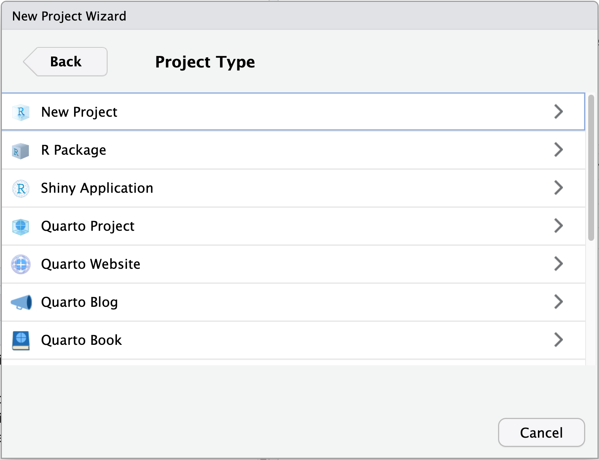
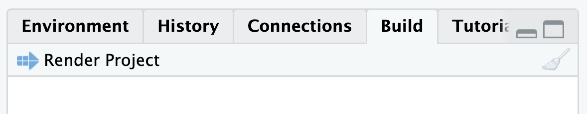

ds-project
├── 01-import.qmd
├── 02-visualize.qmd
├── README.md
└── data
└── records.csv13 Projects
So far, we’ve concentrated on single Quarto documents: a single .qmd that defines all of its Quarto options in its header. In this chapter, you’ll learn about Quarto projects: a way to organize collections of Quarto documents.
You’ll start by learning what a Quarto project is (Section 13.1), how to create one or turn an existing folder into one, and how the project root affects the paths you write (Section 13.3). You’ll then see how working with a project differs from working with single files, and how to render all or part of a project (Section 13.4). Finally, you’ll learn how to set project-level options (Section 13.5.1) and common metadata shared by the documents in the project (Section 13.5.2).
13.1 What is a Quarto project?
From a technical perspective, a Quarto project is simply a folder that contains the file _quarto.yml. From a practical perspective, using a Quarto project has two benefits:
- You can easily render all the Quarto documents in the project folder.
- You can set options common to the documents in a single place.
Figure 13.1 shows the folder ds-project, a simple data science project that contains some Quarto documents.
ds-project/.
To turn this folder into a Quarto project, add the file _quarto.yml, as shown in Figure 13.2.
ds-project
├── 01-import.qmd
├── 02-visualize.qmd
├── README.md
├── _quarto.yml
└── data
└── records.csvds-project is now a Quarto project because it contains _quarto.yml.
The presence of _quarto.yml, even if empty, signals to Quarto that this is a project, and allows you to render without specifying a file:
Terminal
quarto render Quarto will then render all Quarto documents in the project. In this example, Quarto creates the files 01-import.html and 02-visualize.html, and their supporting folders 01-import_files/ and 02-visualize_files/ (Figure 13.3).
ds-project
├── 01-import.html
├── 01-import.qmd
├── 01-import_files
│ └── libs
├── 02-visualize.html
├── 02-visualize.qmd
├── 02-visualize_files
│ └── libs
├── README.md
├── _quarto.yml
└── data
└── records.csvds-project/ after you run quarto render.
You’ll learn more about previewing and rendering projects in Section 13.4.
Beyond indicating that the folder is a Quarto project, the file _quarto.yml also stores Quarto YAML options. These can be project-level options or document-level options common to the documents in the project. Project-level options are set under project, one of which is type. If the file _quarto.yml is empty, or if type is unspecified, Quarto assumes the type is default. That is, it’s equivalent to:
_quarto.yml
project:
type: defaultOther project types include manuscript, website, and book. You’ll learn more about the website type in Chapter 14.
You’ll learn about a few more project-level options in Section 13.5.1 and about setting common document options in Section 13.5.2.
TipRStudio projects
The file that identifies a folder as a Quarto project, _quarto.yml, is distinct from the file that identifies a folder as an RStudio project, folder_name.Rproj. However, in practice the concept of what makes a folder a “project” is the same, and folders are often both a Quarto project and an RStudio project, and include both files.
13.2 Create a project
You’ve already seen how you can create a project in an existing directory by adding the file _quarto.yml. You can also create a project in a new directory using the quarto create command:
Terminal
quarto create projectQuarto will give you an interactive prompt asking for the project type, directory name and project title. You can also specify these directly to the command:
Terminal
quarto create project default project-name project-titleQuarto then creates the folder, project-name in this example, and populates it with _quarto.yml and a Quarto document with the same name as the project title, project-title.qmd:
project-name
├── _quarto.yml
└── project-title.qmdQuarto also adds the project title to _quarto.yml:
_quarto.yml
project:
title: "project-title"13.3 The project root
The folder that contains _quarto.yml is the project root. For ds-project, the project root is the ds-project/ folder. The project root is the starting point for project-relative paths.
CautionDon’t nest
_quarto.yml files
Each project should have one, and only one, _quarto.yml file. Its location defines the project root for the purpose of quarto render, and you are likely to get unexpected behavior if you have a _quarto.yml file in a subfolder.
Suppose ds-project also has a document in the data/ folder and a logo in an images/ folder (Figure 13.4).
ds-project/
├── _quarto.yml
├── 01-import.qmd
├── 02-visualize.qmd
├── data/
│ ├── provenance.qmd
│ └── records.csv
└── images/
└── logo.pngds-project folder with a document, data/provenance.qmd, in a subfolder.
Paths in a document, like the path to an image, are relative to that document. So, to include the logo in provenance.qmd, you step up out of data/ with ../:
data/provenance.qmd
{fig-alt="The project logo."}If you start a path with /, it’s relative to the project root instead:
data/provenance.qmd
{fig-alt="The project logo."}The path /images/logo.png refers to the same file from any document in the project, so it still works if you move the document, or reuse the line with the include shortcode (Section 12.18).
You can use / in links too, but in a default project a link to another Quarto document, like /01-import.qmd, points at the source file, not the rendered 01-import.html. Links between rendered documents are a feature of websites (Section 14.3.2).
Avoid paths that go up out of the project folder, like ../../shared/logo.png from data/provenance.qmd, which points to a shared/ folder next to ds-project/. They break when someone else renders the project, or when you move the project. Instead, copy the file into the project.
13.4 Render and preview a project
From the project directory, you can render all of the files in the project by rendering without specifying a file:
Terminal
quarto renderQuarto renders all Quarto documents, with some exceptions explained in Note 13.1.
You can also render the contents of a subdirectory of the project by specifying the subdirectory:
Terminal
quarto render subdirAlternatively, from the subdirectory, render without specifying a file:
Terminal
cd subdir
quarto render
Note 13.1: What gets rendered?
Quarto renders all valid Quarto input files (like .qmd, .ipynb, .md and .Rmd) except files or folders whose names start with _ or ., and files that match README.*md.
All formats specified in each file will be rendered.
You can also specify exactly what you do and do not want rendered with the render option in _quarto.yml. See Render Targets in the Quarto documentation for more information.
To preview a project when using the default project type, you must specify a file:
Terminal
quarto preview index.qmdQuarto will render just enough of the project to display the requested document and open a preview. As you interact with the preview, for example by following a link from one document to another, Quarto will render any additional files as needed.
13.5 Project configuration — _quarto.yml
The file _quarto.yml provides project configuration. It typically includes project-level options, project options specific to the project type, and document-level options common to documents in the project.
Here’s a typical example:
_quarto.yml
- 1
-
Project-level options are set under
project. You’ll learn more about these in Section 13.5.1. - 2
-
Options specific to the project type are set under the option that matches the type, for example
website. You’ll learn about thewebsiteoptions in Chapter 14. - 3
- Document-level defaults that apply to all documents in the project. You’ll learn more about these below in Section 13.5.2.
If you’re curious what a more complicated _quarto.yml looks like, look at the _quarto.yml file on GitHub for the project that builds this book.
13.5.1 Project-level options
Project-level options are set under the project option. You’ve already seen that projects can have a type and a title.
_quarto.yml
project:
type: default
title: Data Exploration Another commonly set option is output-dir, which specifies a location for rendered output.
If you don’t set output-dir, Quarto renders outputs alongside their source documents. For example, as you saw in Figure 13.3, the output 01-import.html is rendered in the same location as 01-import.qmd.
It might be easier to have your outputs written to their own directory. You could set output-dir to reports:
_quarto.yml
project:
output-dir: reportsNow when you render the project, the output files end up in the reports/ folder, as shown in Figure 13.5.
ds-project
├── 01-import.qmd
├── 02-visualize.qmd
├── README.md
├── _quarto.yml
├── data
│ └── records.csv
└── reports
├── 01-import.html
├── 01-import_files
├── 02-visualize.html
└── 02-visualize_filesds-project/ after rendering when output-dir is set to reports.
The hierarchical structure of the project is maintained in the output directory. So, if the project also had the document data/provenance.qmd from Figure 13.4, it would render to reports/data/provenance.html.
TipOther project types have a default output directory
You usually don’t need to set output-dir for other project types because they have a default. For example, websites render to a _site/ folder, and books to a _book/ folder.
You can see other available project options on the Project Options reference page in the Quarto documentation.
Some project types also set project-level options under an option that matches their type. For instance, when a project is a website, site-level options are set under the website option:
_quarto.yml
project:
type: website
website:
navbar:
search: true13.5.2 Common metadata
Document options, like those you normally set in a document header, can also be set in _quarto.yml. Quarto applies options set in _quarto.yml to all Quarto files in the project, so you can set common options in a single place instead of repeating them.
As an example, consider a project with two Quarto documents, 01-import.qmd and 02-visualize.qmd. Here are truncated versions of each:
01-import.qmd
---
title: Data Import and Cleaning
author: Soraya Drake
format:
html:
toc: true
code-fold: true
---
## Import
...02-visualize.qmd
---
title: Exploratory Visualization
author: Soraya Drake
format:
html:
toc: true
code-fold: true
---
## Distributions
...These two documents share some options in their document headers: author, and the html format options toc and code-fold. If you move these options to _quarto.yml, Quarto applies them to every Quarto document in the project. So, if _quarto.yml is:
_quarto.yml
project:
type: default
author: Soraya Drake
format:
html:
toc: true
code-fold: trueThen the two documents can have simplified document headers that now only need to specify the title:
01-import.qmd
---
title: Data Import and Cleaning
---
## Import
...02-visualize.qmd
---
title: Exploratory Visualization
---
## Distributions
...As an added advantage, if you add more Quarto documents, you don’t need to remember the exact settings you used, and can just let your new document inherit them from _quarto.yml.
If a document sets an option that is also set in _quarto.yml, the document’s value overrides the one in _quarto.yml. For instance, if there is another document 03-modeling.qmd with a different author, setting author in its document header overrides the value set in _quarto.yml:
03-modeling.qmd
---
title: Modeling
author: Aurelius Garcia
---
TipDirectory-level metadata
If you would like to specify common metadata for documents inside a subdirectory of your project, you can do so by adding a file called _metadata.yml to the subdirectory. Read more in the Directory Metadata section of the Quarto documentation.
Using _quarto.yml can help reduce duplication in the metadata of your documents, but once you have related documents in a project, you often also find you have duplicated content. You can reduce duplication of content by using the include shortcode described in Section 12.18.
13.5.2.1 Multiple formats
You can set defaults for more than one format in _quarto.yml by nesting them under format:
_quarto.yml
format:
pdf:
toc: true
toc-title: "Contents"
html:
toc: true
toc-title: "On this page"If an option applies to all formats, you can set it at the top level. For example, you could move toc: true to the top level:
_quarto.yml
toc: true
format:
pdf:
toc-title: Contents
html:
toc-title: On this pageIf a document doesn’t specify a format, rendering the project renders it to all the formats in _quarto.yml. However, if a document specifies any formats, Quarto renders only those. For example, you could specify that a document only renders to html:
report.qmd
---
title: "Report"
format: html
---If you need to override options for one format, but still want the other formats rendered, you’ll need to specify all formats. Use default as the value for any formats with no options overridden. For example, you might set the table of contents depth for the html format, but use all the default settings for pdf:
report.qmd
---
title: "Report"
format:
html:
toc-depth: 3
pdf: default
---You can use the same idea to add formats for a single document that aren’t specified at all in _quarto.yml:
report.qmd
---
title: "Report"
format:
html: default
pdf: default
docx: default
---13.6 Publishing projects
As well as a single document, you can publish a whole Quarto project. From the project directory, run quarto publish without specifying a filename:
Terminal
quarto publishOnly website, book, and manuscript projects can be published this way.
If you are trying to publish a project, i.e., a collection of documents, that isn’t a website, book, or manuscript, consider making it a website. This only requires adding type: website under the project option in _quarto.yml:
_quarto.yml
project:
type: websiteYour rendered files will then be available at corresponding URLs. For example, a file report.qmd in the root of the project directory that renders to PDF will be available at { provider URL }/report.pdf. Adding website navigation is optional, but will generally make things easier to find. You’ll learn more about that in Chapter 14.
13.7 Version control
Since .qmd files are plain text, they are ideal for storing in a version control system like Git. A common approach is to have a Git repository for each Quarto project, and to commit all source files (.qmd, _quarto.yml, images, etc.). Sharing your source then becomes as easy as hosting the repository on something like GitHub, GitLab or Bitbucket.
We point out certain files or folders you may, or may not, want to commit as we introduce them. However, we list a few items common to most projects in the sections below.
13.7.1 .gitignore
If Quarto detects that your project is under Git version control, it may add items to .gitignore directly. In particular, it generally adds the folder .quarto/. This folder is used for temporary artifacts of the Quarto rendering process and never needs to be committed. You should generally commit any changes Quarto makes to .gitignore.
13.7.2 Output files and directories
In general, you don’t need to commit rendered document files or the output directory (e.g. _site/ for websites, _book/ for books, _manuscript/ for manuscripts, or the folder you set with output-dir) because you can always recreate them by rendering. However, there are some circumstances where it makes sense to commit them:
You are producing stand-alone files and the hosted repo is the venue for sharing them. Including stand-alone files (e.g. PDF or Word documents) in a repo can make for a large repository, and diffs on them aren’t usually very useful, but it can make sense if you need to easily grab, or link to, old versions of documents.
You are directly hosting web content from your repository, for example via the
docs/folder on GitHub, or with Git-backed hosting from Netlify.
13.8 Tools
There are a few tool-specific shortcuts when you are working with a Quarto project. You can read more about them for your tool in this section.
13.8.1 RStudio
13.8.1.1 Creating a project
You can create a new project in RStudio using File > New Project. Select New Directory, then Quarto Project.

13.8.1.2 Rendering a project
RStudio will detect when an RStudio project is also a Quarto project and display a Build pane. The Render Project button in this pane renders the entire project. You can also use the shortcut .

If you add _quarto.yml to an existing RStudio project, you may need to close and reopen the project to see the Build pane.
13.8.1.3 Previewing a document
If you have a document in your project open in the editor, you can use the usual Render button (or shortcut) to preview the document. This command is equivalent to running:
Terminal
quarto preview document.qmd --to default --no-watch-inputs --no-browseThis is useful when you are editing the file, but it is not equivalent to rendering the project. In particular, it doesn’t render all formats, and it doesn’t render other files unless they are needed.
13.8.1.4 Publishing
In RStudio when you have a Quarto document or project open, you’ll see a Publish  button in the Editor. You can use this button to publish to Posit Connect and Posit Connect Cloud. Behind the scenes, this button uses the rsconnect R package rather than
button in the Editor. You can use this button to publish to Posit Connect and Posit Connect Cloud. Behind the scenes, this button uses the rsconnect R package rather than quarto publish. If you use RStudio and are publishing to Posit Connect or Posit Connect Cloud, we recommend reading the RStudio documentation on Publishing.
13.8.2 Positron
13.8.2.1 Creating a project
You can create a new project with the Quarto: Create Project command. Positron prompts you for a type, location and directory name.
13.8.2.2 Rendering a project
Render your entire project with the Quarto: Render Project command.
13.8.2.3 Previewing a document
If you have a document in your project open, you can use the usual Preview button, shortcut or Quarto: Preview command to preview the document. This is useful when you are editing the file, but it is not equivalent to rendering the project. In particular, it doesn’t render all formats, and it doesn’t render other files unless they are needed.
13.9 Wrapping up
You’ve seen how a Quarto project allows you to organize, configure and render a folder of documents. Projects are particularly useful when you have a set of documents that share some metadata. But, even without shared metadata, the ability to easily render a directory of documents is a good reason to use a project.
Projects are also the foundation for some of Quarto’s richest outputs: websites, books and manuscripts are all special types of projects. In the next chapter, Chapter 14, you’ll build on everything you’ve learned here to create a website. We don’t cover books and manuscripts in this book, but you can read about when you might want them in Section 17.3 and Section 17.4.
There’s plenty more you can do with projects that we didn’t cover. Here are a few worth knowing about:
Computational environments. A project is a natural place to record the packages your code depends on, for example with
renvfor R, or a virtual environment for Python. This makes it easier for collaborators, and CI services, to reproduce your results. You can learn more on Virtual Environments in the Quarto documentation.Freeze. The
freezeexecution option stops Quarto from re-running a document’s code during a full project render. Quarto stores the results in_freeze/, which you commit, so collaborators and CI services can render your project without your computational environment. Be aware that withfreeze: auto, any edit to a document, even to its prose, re-runs its code. Withfreeze: true, a project render ignores edits to a frozen document completely, until you render that document directly. You can learn more on Managing Execution in the Quarto documentation.Pre- and post-render scripts. The
pre-renderandpost-renderproject options run your own scripts before and after a render, for example to prepare data or check the links in your output. You can learn more on Project Scripts in the Quarto documentation.Project profiles. A profile, like
_quarto-production.yml, holds options that Quarto merges over_quarto.ymlwhen you activate it. Profiles let one project render differently in different situations, for example a public and an internal version, or freeze locally but run all code in production. You can learn more on Project Profiles in the Quarto documentation.Custom project types. If you often create projects with the same structure or settings, you can package them as a custom project type in an extension, which others can then use as a starting point. You can learn more on Project Types in the Quarto documentation.